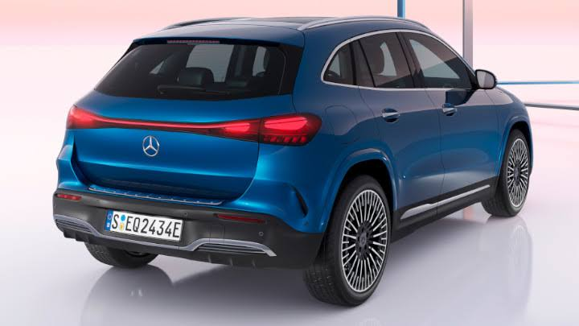
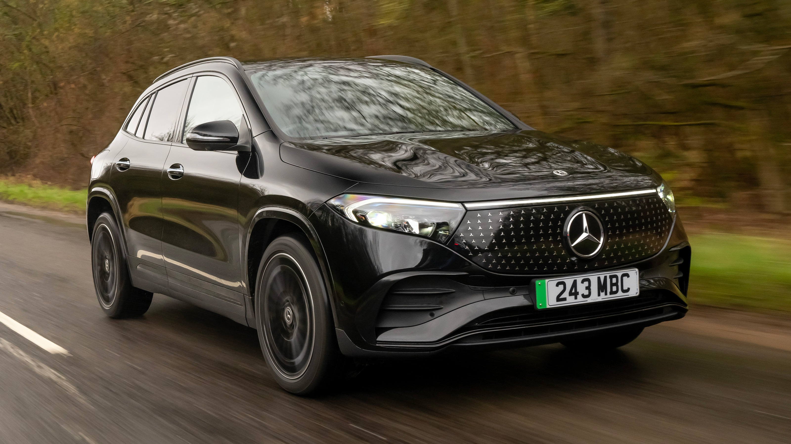

The Mercedes-Benz EQA is a compact, fully electric luxury SUV that combines the practicality of an SUV with the quiet and smooth driving experience of an electric vehicle. It is similar in size to the Mercedes-Benz GLA and is designed mainly for everyday driving, commuting and longer trips. The EQA 250+ is powered by a 70 kWh battery and produces 140 kW of power. Mercedes-Benz lists a range of up to 578 km under NEDC testing, although real-world range will usually be lower depending on driving conditions, speed, weather and use of heating or air conditioning.


Inside, the EQA has a modern and premium cabin with Mercedes-Benz's MBUX infotainment system, digital displays, smartphone connectivity and a range of safety and driver-assistance features. It seats five people and has a practical amount of storage for a vehicle of its size. One of its main advantages is its comfort and quietness, making it particularly well suited to city driving and daily commuting. Overall, the Mercedes-Benz EQA is a good choice for someone looking for a stylish, comfortable and practical electric SUV with a premium interior, although it is not as spacious or fast-charging as some newer electric SUVs.